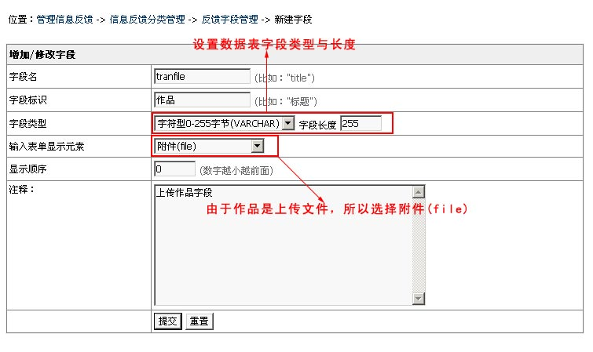
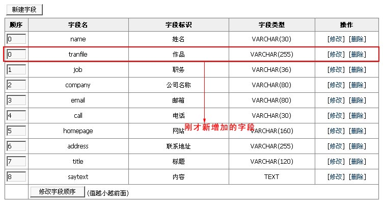
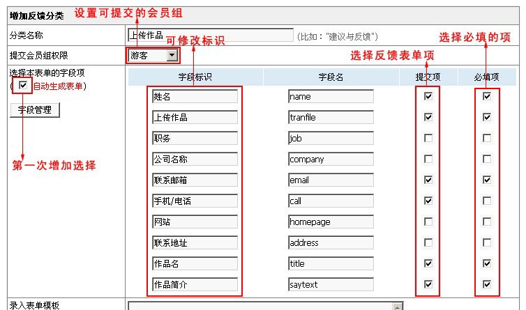
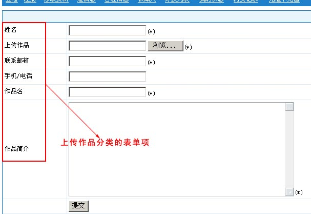
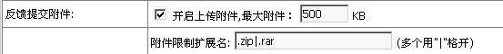
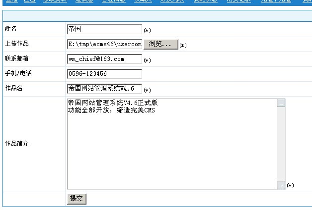
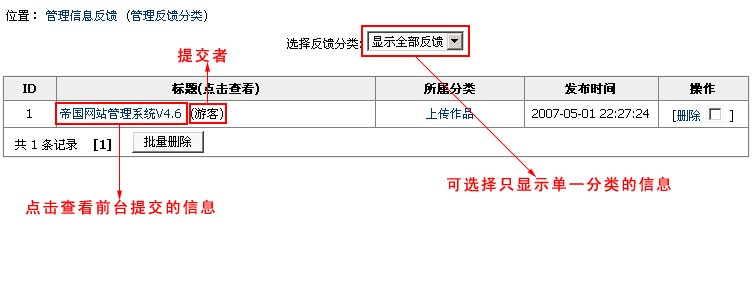
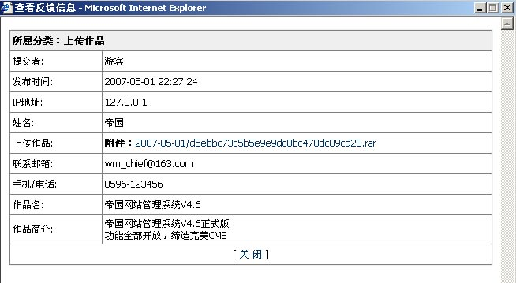

1、分析反馈表单需要的字段：
经过分析我们需要的字段如下：(字段标识：字段名)
姓名：name
联系邮箱：email
联系电话：call
作品名：title
作品：tranfile
作品简介：saytext
2、增加反馈表单所需字段：
由于除了“作品(tranfile)”字段外，其它字段均已存在，所以下面我们就只需增加“作品”字段：
登陆后台->单击菜单"插件"->"管理反馈字段"子菜单，进入管理反馈字段界面，单击按钮，进入如下界面:

提交后，字段即可增加成功，转至"管理反馈字段"会显示刚才新增加的字段，如下图:

3、增加信息反馈分类：
"插件"->"管理反馈分类"->"增加反馈分类"，进入如下界面，填写信息并提交:

增加分类成功后，转至"管理反馈分类"界面，单击[访问]按钮查看已增加的反馈分类，如下图:

其它说明：如果你想上传附件，必须到"系统"->"参数设置"->"文件设置"那开启"反馈提交附件"：

4、至此，“作品提交”表单制作完毕。
(小贴士：如果要更改反馈表单界面，可以修改分类，将“录入表单模板”内容复制至dreamweaver进行修改。)
5、现在我们测试下“上传作品”反馈分类:
(1)、进入前台表单提交页面，填写如下表单信息，点击“提交”：

(2)、返回后台查看与管理前台提交的作品:
"插件"->"管理信息反馈"，进入如下界面:
 点击查看前台提交的信息，如下图:
 |